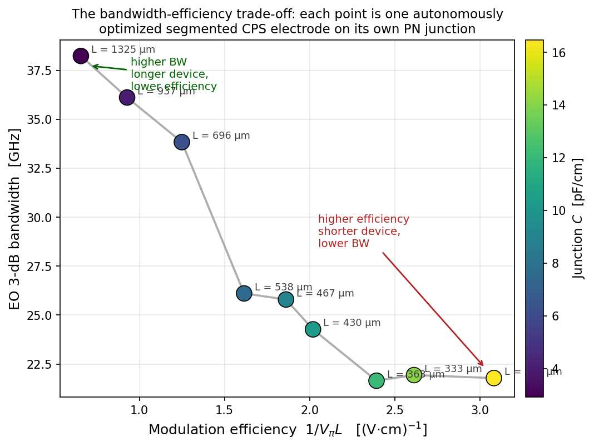
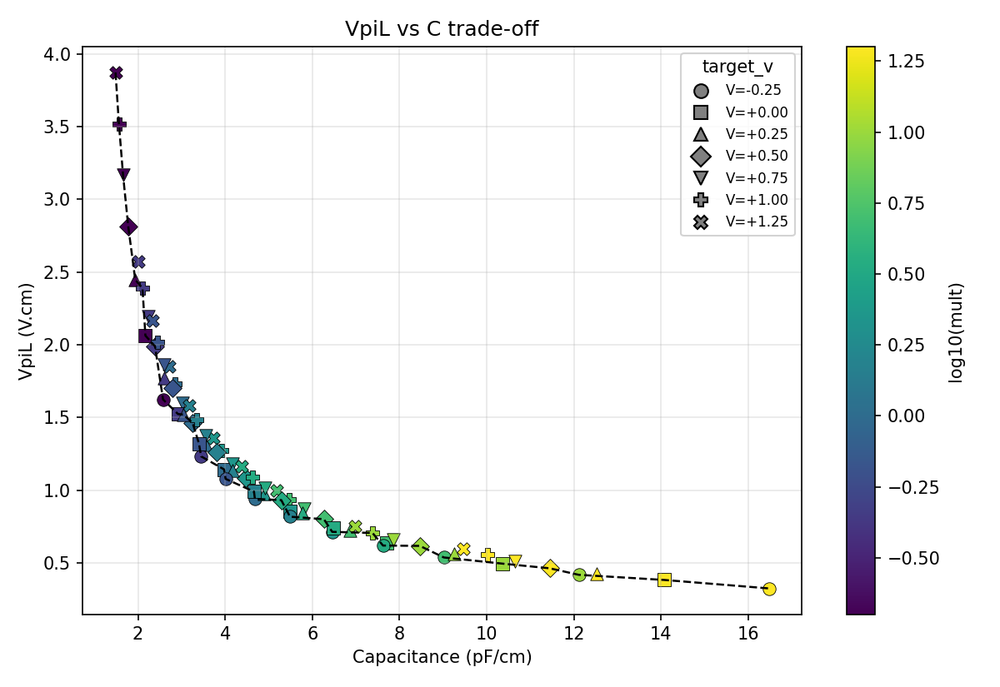
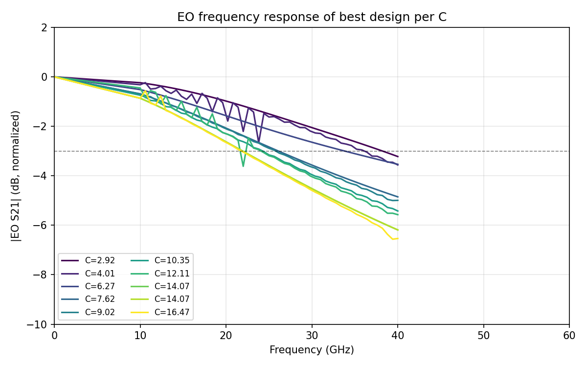

In a silicon photonic Mach–Zehnder modulator, the two numbers a customer actually reads off the datasheet are bandwidth and VπL. Bandwidth tells them how fast the device can swing; VπL tells them how short it can be for a given drive voltage. The two are physically coupled — a heavier-doped junction gives lower VπL but loads the microwave electrode harder, and the bandwidth falls. Where you choose to sit on that curve is the operating point of the whole modulator.
Drawing the curve is famously slow. Each point on it requires a self-consistent electrostatic charge simulation of the PN junction, an optical mode solve to get the phase-shift efficiency, a 3-D RF FDTD of the microwave electrode that loads it, and a stack of analytic post-processing to fold the junction back into the loaded transmission line. Four different physics, four different solvers, all indexed by a geometry that has to stay consistent across them. Most teams pick one operating point and ship a single device, because doing it for ten points is months of work.
We let an LLM-orchestrated agent do it in a single overnight run.

The Pareto curve is the result. To raise the bandwidth above ~30 GHz you have to accept a lower-doped junction with VπL ≥ 1 V·cm — i.e. a longer device. To make the device short (sub-300 µm), you have to accept BW around 22 GHz. There is no operating point that gives both, in this fab process, with this electrode topology.
That single curve is something a discrete-device designer can act on. It is also the kind of plot that, until this run, didn't exist for any one project because nobody had time to make it.
This is the third in a series of agentic photonic design experiments — following the Y-splitter and the electrical routing runs — and the first to span multiple physics domains in one autonomous loop.
The hardness of a PN-junction MZM is not in any one simulator. It is in the handoff between them.
To get a single, honest data point on the bandwidth-vs-efficiency plot, here is what has to happen:
Every one of those steps consumes a slightly different geometric
description. The charge solver wants the doping profile and contacts; the mode
solver wants the optical waveguide; the RF FDTD wants the aluminum CPS and the
dielectric stack; the analytic step wants C, R, length, and a
stack of S-parameters in a coherent frequency convention. Tidy3D internally
uses the physics phase convention, which is opposite the engineering
convention, so half of the extracted quantities need a
np.conjugate() before they line up with textbook formulas. Forget
one of those and you spend a week debugging.
This is what we mean by multiphysics. The simulators are the easy part. The hard part is keeping a single geometry, a single doping, a single bias point coherent across four physics domains, and turning the cloud of results into a scalar objective that an optimizer can act on.
We split the problem in two.
Step 1 maps the junction. A scalar mult scales
both p- and n-core doping. Sweep mult along a bracket-and-fill
schedule that places anchors at {0.2, 1, 5, 20} and then inserts new mults at
the geometric midpoint of the largest gap on the (VπL, C)
frontier. Each mult costs one charge sim plus one mode-solver batch over nine
bias points. Ten mults gave seventy trade-off points across the achievable
(VπL, C) Pareto cloud:

The agent doesn't have to be clever here. It walks the bracket-and-fill, caches every charge and mode result on disk, and journals each row.
Step 2 designs an electrode per operating point. From the Step-1 journal, pick ten capacitance values linearly spaced across the available range, and for each one choose the Step-1 row with minimum VπL within ±10 % of that C — i.e. the most efficient junction available at that capacitance.
Now run, independently for each of the ten operating points, an
8-parameter optimization of a segmented coplanar-strip T-rail electrode. The
free parameters are the inner gap g, signal and ground rail widths
ws/wg, T-bar width/length s/r,
T-neck length/width h/t, and inter-T period gap
c. The objective evaluates the loaded characteristic impedance
and loaded RF effective index at a band-center 25 GHz:
J = ((Re Z0,loaded(f0) − 50) / 50)² + ((neff,RF,loaded(f0) − 3.88) / 3.88)²
where the junction loading is applied after the FDTD via analytic ABCD arithmetic. The 3.88 target is the optical group index — match it and the optical and microwave waves co-propagate, which is what high-BW MZMs require.
Inside each operating point: 8 Latin-hypercube initial samples on the cloud, then three batches of 4 expected-improvement Bayesian optimization proposals on a Gaussian-process surrogate. Soft cap of 20 evaluations per operating point. After each batch the agent appends its own analysis to the journal — best-so-far, parameter-vs-objective correlations, which fab-rule bounds the optimum is pinned to, any retries — and then either continues or stops if the stagnation criterion fires.
Ten operating points × twenty evaluations is, naively, two hundred RF FDTDs. The actual number that hit the cloud was around 150. The rest were cache hits, for reasons we'll come back to.
We made nine distinct designs (operating point 8 happened to share a junction with operating point 7, so they tied). The numbers, sorted by efficiency:
| C [pF/cm] | VπL [V·cm] | 1/VπL [(V·cm)⁻¹] | LMZM [µm] | Z0,loaded [Ω] | neff,RF | BW3dB [GHz] |
|---|---|---|---|---|---|---|
| 2.92 | 1.523 | 0.66 | 1325 | 49.3 | 3.70 | 38.2 |
| 4.01 | 1.078 | 0.93 | 937 | 48.3 | 4.20 | 36.1 |
| 6.27 | 0.800 | 1.25 | 696 | 38.6 | 4.66 | 33.8 |
| 7.62 | 0.619 | 1.62 | 538 | 32.0 | 4.55 | 26.1 |
| 9.02 | 0.537 | 1.86 | 467 | 30.7 | 4.88 | 25.8 |
| 10.35 | 0.495 | 2.02 | 430 | 27.8 | 5.05 | 24.3 |
| 12.11 | 0.418 | 2.39 | 363 | 26.3 | 5.31 | 21.6 |
| 14.07 | 0.383 | 2.61 | 333 | 22.4 | 5.36 | 21.9 |
| 16.47 | 0.324 | 3.08 | 282 | 21.0 | 5.60 | 21.8 |
Two regimes are visible.
Light-loading regime (C < ~5 pF/cm). The electrode holds Z0 inside a couple of percent of 50 Ω, and the RF group index sits close to 3.7-4.2. Bandwidth tops out at 38 GHz with a 1.3 mm- long device. This is the operating point a high-speed analog or short-reach coherent designer would pick.
Heavy-loading regime (C > ~7 pF/cm). The
8-parameter electrode can no longer match Z0 to 50 Ω — the shunt
admittance of the heavily-doped junction pulls the loaded characteristic
impedance into the 20-30 Ω range, and the RF group index overshoots 3.88.
Bandwidth collapses below 25 GHz. Six of the eight free parameters in these
best designs are pinned against the fab-rule box (wg-low,
s-low, r-high, h-low, t-high,
c-high), which is the agent's way of telling us the bounds are
limiting, not the physics. The reward, though, is footprint: a 282 µm
modulator delivers 5 dB extinction at 2 Vpp.
The corresponding EO frequency responses are below; the headroom above the −3 dB line at low C versus the early rolloff at high C is the bandwidth-vs-efficiency trade made visible:

The engineering takeaway is uncomfortable but real: to get more bandwidth, you have to accept a less efficient (longer) device. The fastest modulator in our sweep is 1.3 mm long; the most efficient is 282 µm but limited to ~22 GHz. There is no free corner in this design space — at least not within the 8-parameter electrode box we gave the agent. Loosening those bounds is an experiment for another night.
A single 8-parameter Bayesian optimization with 20 RF FDTDs is reasonable. Ten of them in series, on the cloud, would be expensive. Three things made this run actually cheap:
Latin-hypercube re-use across operating points. The LHS proposer is deterministic and operating-point-independent. After the first c_target ran its 8 LHS evaluations on the cloud, every subsequent c_target got those 8 FDTDs as cache hits — same geometry, same de-embedded S-parameters, only the loaded objective recomputed against a different junction. Eight of the twenty per-target evaluations became free, every single time.
Pareto collisions in the target set. Two of the ten operating points ended up sharing the same Step-1 junction row. The agent ran the full BO loop for the second of them anyway — and got twenty cache hits, zero new FDTDs, instant return.
Batched cloud submission. Each batch of 4-8 designs is one
tidy3d.web.Batch. The cloud runs them all in parallel, so the
wall-clock of a batch is the slowest design, not the sum. Mode solves for
wave-ports are batched the same way.
Final accounting: 196 evaluation rows in the Step-2 journal, of which roughly 151 were new cloud FDTDs (the rest cache hits). One design failed sanity-checks (a sign-flipped neff out of the phase-unwrap, a known weakness of ABCD de-embedding when α is small and β wraps near zero) and the orchestrator retried it with a 2 % geometric perturbation. The retry landed cleanly. Total wall-clock: about seventeen hours, mostly idle wait overnight. No human in front of the screen.
The combined cost across charge sims, mode solves, and RF FDTDs was a few hundred FlexCredits — a single-day budget for the kind of result that otherwise takes a team-month.
The agent was not in charge of the methodology. The engineering choices — the loaded-line objective, the push-pull series-PN convention with its C/2 and R×2 factors, the c-target selection rule, the constant-length segmented section, the budget structure — were set up in advance.
What the agent did, all night, was run that methodology. Two moments are worth pulling out, both because they ended up as durable journal entries:
A mid-run pipeline fix. On the first BO batch of operating
point 0, Tidy3D rejected the upload with a SetupError: the wave
port was sitting less than two mesh cells from the simulation boundary in
y. Root cause: the feedline length
L_feedline = 10 × period had collapsed below the port clearance
when BO proposed a small-period electrode. The agent's response was to floor
the feedline length at 300 µm in step2/geom.py, log a meta-row in
the journal explaining why, and re-submit. The geometry hash didn't include
the feedline length, so the existing LHS cache stayed valid.
The de-embed failure and its retry. On operating point 1,
one BO design came back with n_eff at f0 = -3.01. Sanity-check
failed; auto-retry launched with a 2 % perturbation; retry succeeded; both
events are in the journal.
The point isn't that these are clever. The point is that the journal has them, in plain language, alongside every batch's best-so-far and every parameter correlation. Anyone walking up to the project the morning after can scroll through the journal and reconstruct the run's reasoning without having watched it happen.
Two photonic devices have now been swept with this same agentic loop, end to end: a Y-splitter (a single-physics problem) and a PN-junction MZM (a four-physics-domain problem). The pattern was identical in both cases. The engineer defines what "better" means in a scalar objective, hands the agent a parameter box and a cloud budget, and looks at the journal the next morning.
The hard work is upstream of the loop — picking the right scalar objective, picking the right parameter box, picking the right c-target rule, knowing that the loaded line is the right thing to optimize and not the unloaded one. The agent doesn't replace that. What it replaces is the months of careful hand-stewardship between four solvers that follow.
What this enables, then, is the next sweep. A ring-modulator bandwidth-vs-Q map. A grating-coupler insertion-loss-vs-fiber-angle curve. A balanced photodiode RF-bandwidth-vs-area sweep. A heater power-vs-response-time. These aren't research problems any more; they are overnight agent jobs against a paid multiphysics cloud.
The creativity does not disappear. It moves up the stack: from drawing geometries to picking objectives, and from staring at S-parameters to reading the trade-off curve that comes out the next morning.